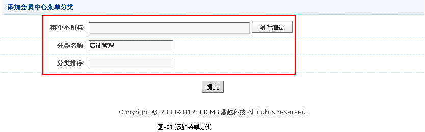
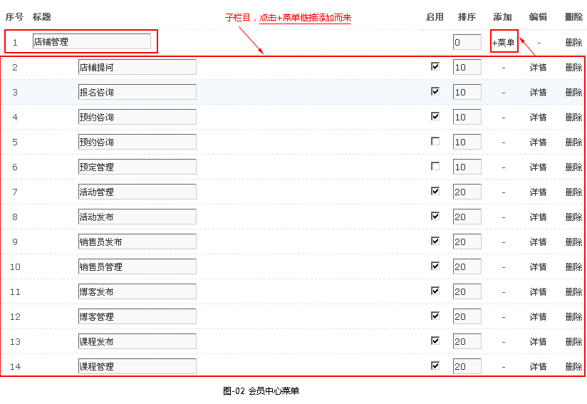
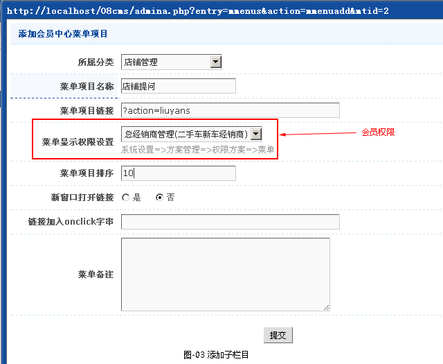

会员中心菜单管理
一、前言
配置用户会员中心左侧栏的菜单，可以根据不同会员组显示不同的菜单。
二、会员中心菜单管理
- 2.1会员中心菜单创建
-
1.添加菜单分类，系统设置->会员中心->菜单管理->添加菜单分类,如图-01所示。

2.添加好菜单分类后，该菜单分类就相当一级栏目，要想添加子栏目，就点击该分类相应+菜单链接,如图-02所示。

3.添加菜单子栏目,如图-03所示。

a.所属分类：菜单的层次设置
b.菜单项目名称：菜单显示的标题
c.菜单项目链接：菜单处理文档链接路径，处理文件位于网站根目录adminc内。
d.菜单显示权限设置：即不同的会员组可设不同的显示或隐藏的权限。这里有选择在系统管理后台->系统设置->方案管理->权限方案设置（√菜单）。